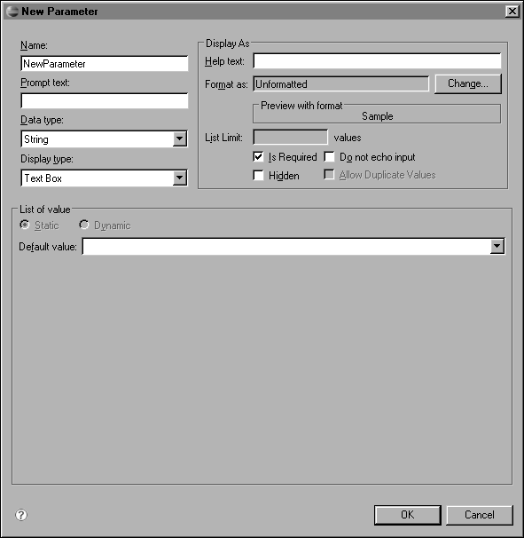
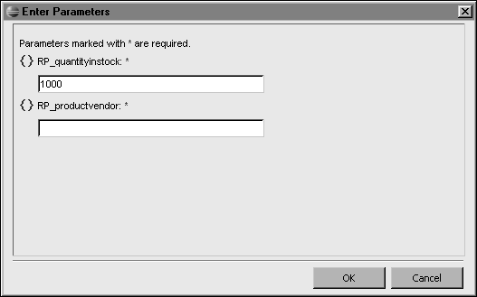

Enabling the User to Filter Data
When you create a report, you build a data set and typically specify filter criteria to display a certain set of data in the report. When a user views the report, the user sees the information that you selected. As users become familiar with the report and recognize its potential as an analytical tool, they may want to view the data in different ways. For example, in a sales report, a user may want to view only sales in a particular region, or sales over a certain amount, or sales that closed in the last 30 days.
The solution for this type of ad hoc reporting requirement is for the report to prompt the user to provide information that determines what data to display. You make this solution available by creating report parameters.
To enable users to filter database data, complete the following tasks in the recommended order. For detailed information about these tasks, see the corresponding topics later in this section.

|
1
|
In Name, type a name for the parameter. It is good practice to use a prefix, such as RP, in the name to help distinguish report parameters from other parameter types, such as data set parameters. For example, a report parameter used to filter on a quantityinstock field might be named RP_quantityinstock. The value you specify in Name appears as the prompt to the report user if you do not specify a value for the next property, Prompt text. Rather than specify only a Name value for the parameter, you should use a technically descriptive value in Name, and provide a user-friendly value in Prompt text.
|
The data type that you select for the report parameter determines the formatting options that are available if you choose to provide a default value or a list of values for the report parameter. The data type of the parameter does not have to match the data type of the field in the data source. Values in an orderID field, for example, can be stored as integers in the data source, but the report parameter that is associated with this field can be of string type.
This procedure assumes that you already created a data set.
Figure 12-2 shows an example of a query with two parameter markers.

At this point, you are ready to define a data set parameter for each ? parameter marker. The next section describes this task.
How to define a data set parameter
This procedure assumes that you already inserted a parameter marker in the SQL query.
Figure 12-3 shows an example of a data set parameter definition where the data set parameter, DSP_quantityinstock, is linked to a report parameter, RP_quantityinstock.

|
5
|
Repeat steps 3 and 4 to define additional data set parameters for any other parameter markers in the SQL query.
|

If you completed all the tasks that were described earlier in this section, the WHERE clause of the query incorporates the specified values, and the report displays the rows that match the WHERE clause.